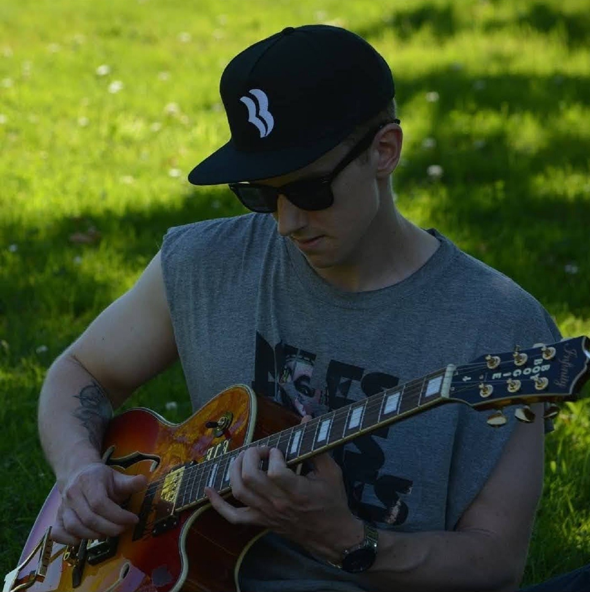
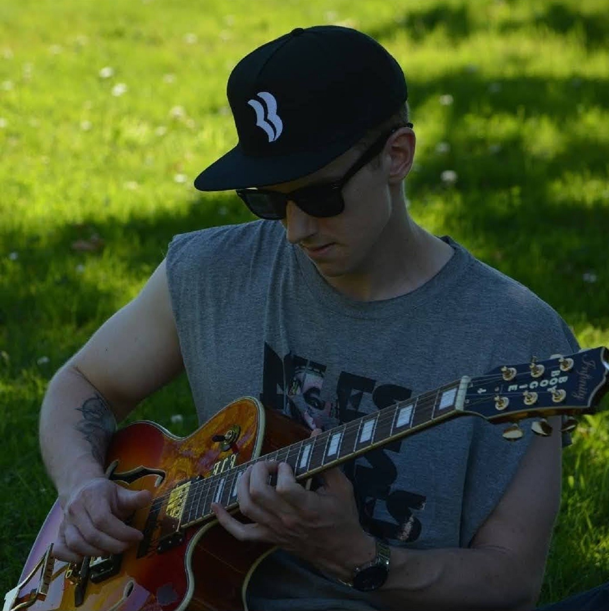

Sins N Grins
Sins N Grins is the solo project of Brian Scherner, a 28 year old musician from Portland, Oregon.
 



All releases
Self Loathing in Color

This is the first complete album I have ever recorded, and I also consider it my best work. I recorded it in about two months. Even though it was an entirely acoustic release, I learned just how arduous recording an album can be! I spent many mornings and nights recording tracks obsessively, sometimes easily racking up over 100 recordings for each song. With my hands throbbing, fingers burning, and stomach growling from working for hours with no breaks, I learned that sometimes imperfect recordings can actually be the best recordings. That helped me mellow out and to stop fretting so much over things as minor as a buzzing string or a creaking chair. Recording this album was one of the most rewarding things I have done in my free time and I am immensely proud of it.